Química de los metales de transición y química de coordinación
title: “Química de los metales de transición y química de coordinación”
Introducción
Los metales de transición forman el bloque d de la tabla periódica, cuarenta elementos que se extienden del grupo 3 al grupo 12 y que se caracterizan por el llenado progresivo de la subcapa d, incompleta en sus átomos o iones (Brown et al. 2012, sec. 23.1). Esta configuración inacabada les confiere propiedades ausentes en los metales representativos: múltiples estados de oxidación, compuestos intensamente coloreados, magnetismo y una facilidad notable para formar complejos con moléculas y aniones que sostienen la química industrial y la biológica (Brown et al. 2012, sec. 23.1).
Su posición central, entre los metales activos del bloque s y los no metales del bloque p, explica que sirvan de puente entre la química iónica y la covalente y que sus compuestos abarquen desde sales sencillas hasta especies con enlaces muy covalentes (Brown et al. 2012, sec. 23.1). La vida depende de ellos: el hierro del grupo hemo transporta oxígeno, la clorofila captura la luz solar y la anhidrasa carbónica emplea zinc en su centro activo para acelerar la hidratación del dióxido de carbono (Brown et al. 2012, secs. 23.1, 23.3).
Este capítulo recorre el bloque en cuatro movimientos: las propiedades periódicas de los metales y su metalurgia, los compuestos de coordinación con sus ligandos y su nomenclatura, la isomería y el color, y la teoría del campo cristalino que explica ambos fenómenos, para cerrar con las aplicaciones catalíticas y biológicas del grupo de elementos más numeroso de la tabla (Brown et al. 2012, cap. 23).
Los metales de transición en la tabla periódica
Los metales de transición ocupan la franja central de la tabla periódica que separa los metales activos de los no metales, con densidades y puntos de fusión elevados que revelan la participación de los electrones d en el enlace metálico (Brown et al. 2012, sec. 23.1; Pauling 1988, cap. 17). De ellos, los del cuarto periodo, del escandio al cinc, son los más estudiados porque exhiben el comportamiento del bloque con la mayor claridad.
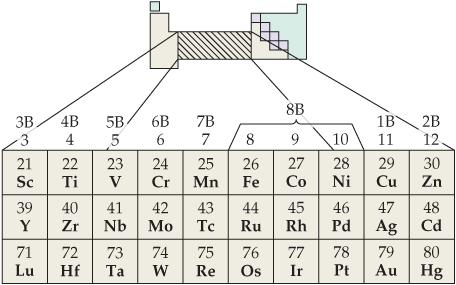
La posición que ilustra Figura 23.1 hace de estos elementos un puente entre el carácter iónico de las sales de los metales alcalinos y el covalente de los compuestos de los no metales (Brown et al. 2012, sec. 23.1). La maleabilidad, la conductividad térmica y eléctrica y la resistencia mecánica compiten con las de los mejores metales representativos, y sus óxidos responden a la escala de pH con un abanico mucho más amplio de comportamientos (Pauling 1988, cap. 17).
Configuraciones electrónicas y estados de oxidación
Los átomos del cuarto periodo llenan la subcapa 3d según el patrón general [Ar]3dⁿ4s², aunque las configuraciones reales muestran excepciones notables como la del cromo, [Ar]3d⁵4s¹, en la que la estabilidad del llenado semicompleto se impone (Brown et al. 2012, sec. 23.1). Al formarse los iones, los electrones s se eliminan antes que los d, de modo que el titanio(III) queda como un ion d¹, el manganeso(IV) como d³ y el cobalto(III) como d⁶, configuraciones que determinan su química de coordinación (Brown et al. 2012, secs. 7.4, 23.1).
La multiplicidad de estados de oxidación distingue al bloque d de los grupos s y p: el hierro alcanza +2 y +3, el manganeso desde +2 hasta +7 y el vanadio desde +2 hasta +5, y el estado +2 es común en casi todos los metales de transición, mientras que el escandio solo se conoce en +3 porque su ion Sc³⁺ recupera la configuración del argón (Brown et al. 2012, secs. 23.1, ejercicio 23.14). Al avanzar por un periodo, la atracción del núcleo sobre los electrones d crece más marcadamente que sobre los s, de modo que los elementos tardíos del periodo tienden a preferir los estados de oxidación más bajos (Brown et al. 2012, sec. 23.1).
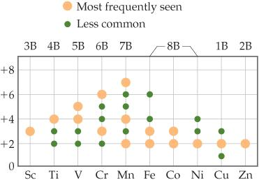
El mapa de Figura 23.2 resume la regla práctica: los primeros miembros del periodo explotan estados altos, como el +7 del permanganato, mientras los últimos, con más electrones d, se conforman con +2 y +3 (Brown et al. 2012, sec. 23.1). La contracción lantánida completa el cuadro: al descender al quinto y sexto periodo, el llenado de la subcapa 4f apantalla mal la carga nuclear, de modo que los elementos de los periodos 5 y 6 presentan radios atómicos e iónicos casi idénticos en cada grupo y una química muy parecida, como ocurre con el circonio y el hafnio (Brown et al. 2012, secs. 23.1, ejercicio 23.66).
Metalurgia: de los minerales a los metales
La metalurgia es la ciencia y la tecnología que extrae los metales de la tierra y los procesa para su uso, y los minerales son los compuestos inorgánicos sólidos que los contienen en la naturaleza (Brown et al. 2012, sec. 23.1). La historia de la química es en buena parte la historia de esta extracción, pues los minerales de cobre, hierro, estaño, plata y plomo se emplearon como pigmentos antes de que la fundición los convirtiera en metales (Brock 2015, cap. 1).
Las edades de bronce y de hierro dan nombre a las primeras etapas de la civilización porque la reducción por oxidación en el horno de fundición transformó los óxidos y sulfuros en metales útiles: el sulfuro de arsénico y el de antimonio tiñeron el realgar, el oropimente y la estibnita, el óxido rojo de hierro decoró muros y los minerales de cobre sirvieron de cosméticos mucho antes de su explotación metalúrgica (Brock 2015, cap. 1). El oro, el electro y el cobre nativos existían en la naturaleza, pero su escasez no explica por sí sola su uso generalizado (Brock 2015, cap. 1).
El horno puede considerarse el aparato químico más antiguo: nacido para cocer cerámica, se adaptó al vidrio, a la sublimación y a la destilación, y las primeras minas y operaciones metalúrgicas occidentales aparecieron en Mesopotamia, desde donde los metales se comerciaron hacia Egipto (Brock 2015, cap. 1). Hoy la extracción moderna combina la reducción con carbono o con monóxido de carbono para los metales comunes y la electrólisis, que da nombre a la electrometalurgia, para los más activos (Brown et al. 2012, secs. 22.9, 20.9).
Compuestos de coordinación y ligandos
Los compuestos de coordinación son sustancias que contienen complejos metálicos, especies en las que un ion metálico se rodea de varios aniones o moléculas neutras llamados ligandos, y Alfred Werner fundó su estudio a fines del siglo XIX al distinguir la valencia primaria, hoy llamada estado de oxidación, de la valencia secundaria, hoy llamada número de coordinación (Brown et al. 2012, secs. 23.1, 23.2; Pauling 1988, secs. 19-1, 19-2). El ion metálico y sus ligandos forman la esfera de coordinación, y el número de átomos donadores unidos al metal recibe el nombre de número de coordinación, cuyos valores más comunes son cuatro y seis, con geometrías tetraédrica, plana cuadrada y octaédrica (Brown et al. 2012, sec. 23.2; Pauling 1988, sec. 19–2).
Los ligandos aportan sus pares de electrones no compartidos para enlazarse al metal, por lo que pueden ser neutros, como el agua y el amoníaco, o aniones, como el cloruro, el cianuro y el hidróxido, mientras que los ligandos con carga positiva resultan raros porque un catión repele a otro (Brown et al. 2012, secs. 23.2, ejercicio 23.22). La unión metal-ligando es una reacción ácido-base de Lewis: el ligando, base, dona un par de electrones a un orbital vacío del ion metálico, ácido, reforzada además por la atracción electrostática entre el catión y las cargas negativas de los ligandos (Brown et al. 2012, sec. 23.6).
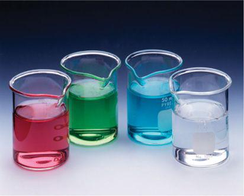
Los colores que exhibe Figura 23.3 pertenecen en realidad a complejos acuosos: el ion [Ti(H₂O)₆]³⁺ es rojo violáceo, el [Co(H₂O)₆]²⁺ rosa y el [Cu(H₂O)₄]²⁺ azul, y cada matiz guarda información sobre la configuración electrónica del metal (Brown et al. 2012, sec. 23.2). El número de coordinación de dos aparece en especies lineales como el [Ag(CN)₂]⁻, el de cinco en el pentacarbonilo de hierro, Fe(CO)₅, que adopta una geometría bipiramidal trigonal, y el de seis domina en la mayoría de los complejos de los metales de la primera serie de transición (Brown et al. 2012, secs. 23.2, ejercicios 23.56, 23.76).
Nomenclatura de los compuestos de coordinación
Nombrar un compuesto de coordinación exige especificar el número y el tipo de cada ligando con prefijos griegos como di, tri y tetra, nombrar después el metal con su estado de oxidación en números romanos y cerrar la esfera de coordinación entre corchetes en la fórmula (Brown et al. 2012, sec. 23.4). Así, el hexaamminacromo(III) nitrato corresponde a Cr(NH₃)₆₃, el tetraamminacarbonatocobalto(III) sulfato a [Co(NH₃)₄CO₃]₂SO₄ y el cloruro de tetraamminadiclororodio(III) a [Rh(NH₃)₄Cl₂]Cl, y cuando el complejo es el anión, el metal se nombra con la terminación -ato, como en el tetrabromo(1,10-fenantrolina)cobaltato(III) de potasio (Brown et al. 2012, secs. 23.4, ejercicios 23.35-23.38).
La nomenclatura adquiere sentido pleno al combinarse con la isomería, porque distingue especies con la misma fórmula que difieren en la disposición de los ligandos: el cis-diclorotetraamminacobalto(III) y su isómero trans no comparten propiedades ni color (Brown et al. 2012, sec. 23.4). El par de ejercicios de nombre y fórmula cierra el dominio del código, pues permite traducir sin ambigüedad entre el nombre, la fórmula y el arreglo espacial del complejo (Brown et al. 2012, sec. 23.4).
Agentes quelantes y el efecto quelato
El átomo donador es el átomo del ligando que se enlaza directamente al metal, y según su número los ligandos se clasifican en monodentados, con un solo donador como el amoníaco, bidentados, con dos como la etilendiamina, la bipiridina o el oxalato, y polidentados, con tres o más como el anión EDTA⁴⁻, que ofrece seis (Brown et al. 2012, sec. 23.3). Los ligandos bidentados y polidentados se llaman agentes quelantes, del griego «pinza», porque sujetan al metal por varios puntos a la vez (Brown et al. 2012, sec. 23.3).
En general, los agentes quelantes forman complejos más estables que los ligandos monodentados relacionados, observación conocida como efecto quelato: la constante de formación del [Ni(en)₃]²⁺ es más de cien millones de veces mayor que la del [Ni(NH₃)₆]²⁺ (Brown et al. 2012, sec. 23.3). El factor termodinámico responsable es la entropía, pues cada ligando polidentado que se coordina libera más moléculas de disolvente que un monodentado equivalente, aumentando el desorden del sistema (Brown et al. 2012, sec. 23.3).
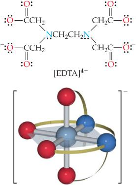
La estructura de Figura 23.4 muestra cómo este anión se enrolla alrededor del metal, ocupando hasta seis sitios de coordinación de una sola vez, aunque en algunos complejos solo cinco de sus átomos donadores se fijan realmente (Brown et al. 2012, sec. 23.3). Por esta capacidad de capturar iones metálicos, los polidentados se llaman también agentes secuestrantes, y el EDTA se emplea para valorar la dureza del agua midiendo el calcio y el magnesio disueltos, además de en tratamientos médicos que movilizan metales tóxicos (Brown et al. 2012, secs. 23.3, ejercicio 23.96).
Porfirinas y la química de coordinación en los seres vivos
Las porfirinas constituyen la familia de quelantes biológicos por excelencia: el anillo plano de porfina, formado por cuatro anillos de pirrol unidos en macrociclo, aloja un ion metálico en su centro, y sus derivados sostienen la respiración y la fotosíntesis (Brown et al. 2012, sec. 23.3). La figura Figura 23.5 enfrenta la porfina desnuda con sus dos complejos más célebres, el hemo b y la clorofila a (Brown et al. 2012, fig. 23.13).
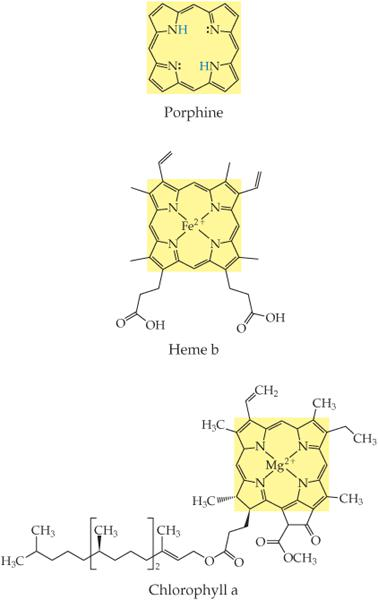
La hemoglobina y la mioglobina transportan y almacenan oxígeno gracias al hierro del grupo hemo, mientras las clorofilas atrapan la energía solar con magnesio en el centro del mismo macrociclo, y en la fotosíntesis esa energía convierte el dióxido de carbono y el agua en carbohidratos (Brown et al. 2012, secs. 23.3, fig. 23.13). Los sideróforos completan el cuadro biológico al secuestrar hierro del entorno para los microorganismos, y la anhidrasa carbónica ilustra la precisión del zinc tetraédrico, coordinado por tres nitrógenos de la proteína y un agua cuyo pKa de 7.5, muy inferior al del agua libre, explica su eficacia catalítica (Brown et al. 2012, secs. 23.3, ejercicio 23.90).
Isomería en los compuestos de coordinación
Los isómeros son compuestos con la misma composición pero distinta disposición de los átomos, y en química de coordinación se dividen en isómeros estructurales, con enlaces diferentes, y estereoisómeros, con los mismos enlaces pero distinta ocupación del espacio alrededor del metal (Brown et al. 2012, sec. 23.4). Entre los estructurales, la isomería de enlace surge cuando un ligando puede coordinarse por dos átomos donadores distintos: el nitrito NO₂⁻ se une por el nitrógeno en la forma nitro, de color amarillo, o por un oxígeno en la forma nitrito, de color rojo, y el tiocianato SCN⁻ ofrece tanto el nitrógeno como el azufre como puntos de anclaje (Brown et al. 2012, sec. 23.4).
La isomería de esfera de coordinación aparece cuando las especies que actúan como ligandos y las que quedan fuera de la esfera se intercambian entre sí, como ilustran los tres compuestos de fórmula CrCl₃·6H₂O: el violáceo [Cr(H₂O)₆]Cl₃, el verde [Cr(H₂O)₅Cl]Cl₂·H₂O y el también verde [Cr(H₂O)₄Cl₂]Cl·2H₂O, en los que uno o dos cloruros han desplazado agua de la esfera y han pasado a la red cristalina como contraiones (Brown et al. 2012, sec. 23.4). La existencia de estas familias explica que la fórmula molecular de un complejo esconda, en realidad, varias sustancias distintas con propiedades físicas y químicas propias (Brown et al. 2012, sec. 23.4).
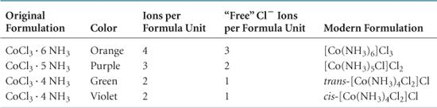
La isomería geométrica es la forma más común de estereoisomería y se da cuando ligandos iguales pueden ocupar posiciones adyacentes o enfrentadas: en el octaédrico [Co(NH₃)₄Cl₂]⁺ de Figura 23.6, la variedad cis, de color violeta, tiene los cloruros juntos, y la trans, verde, los tiene opuestos, siendo identificadas por Werner al observar que solo la cis podía obtenerse del complejo carbonato Co(NH₃)₄CO₃⁺ (Pauling 1988, sec. 19–2). En el plano cuadrado [Pt(NH₃)₂Cl₂], el isómero cis, llamado cisplatino, forma un quelato con dos nitrógenos del ADN desplazando los cloruros y trata ciertos cánceres, mientras el trans, con los cloruros demasiado separados, resulta ineficaz (Brown et al. 2012, sec. 23.4).
La isomería óptica aparece cuando un complejo es quiral, es decir, su imagen especular no es superponible, como ocurre con las dos manos: el ion [Co(en)₃]³⁺ existe como dos enantiómeros que desvían el plano de la luz polarizada en sentidos opuestos, el dextrorrotatorio o d y el levorrotatorio o l (Brown et al. 2012, sec. 23.4). En ausencia de un entorno quiral, la síntesis produce cantidades iguales de ambos, una mezcla racémica que no rota la luz porque los efectos se cancelan, mientras que el cis-[Co(en)₂Cl₂]⁺ sí es quiral y su isómero trans no lo es, por ser superponible a su imagen (Brown et al. 2012, sec. 23.4).
Color de los compuestos de coordinación
Para que una sustancia tenga color visible, debe absorber alguna porción del espectro de luz visible, y el color percibido es la suma de las porciones no absorbidas que llegan a nuestros ojos (Brown et al. 2012, sec. 23.5). Cuando un objeto absorbe solo una región del espectro, vemos el color complementario al absorbido, como explica la rueda de colores, como resume Figura 23.7, y un complejo que absorbe la luz roja aparece verde, y uno que absorbe la amarilla parece violeta (Brown et al. 2012, sec. 23.5).
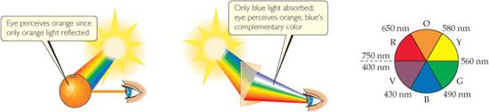
La cantidad de luz absorbida en función de la longitud de onda es el espectro de absorción, y cada complejo muestra un máximo característico: el ion [Ti(H₂O)₆]³⁺ absorbe con máximo en 500 nm, de modo que la luz no absorbida del rojo y del violeta llega al ojo y la disolución se percibe rojo-violeta (Brown et al. 2012, sec. 23.5). El espectro del ion titanio de Figura 23.8 prueba además que el color depende del ion metálico, de su estado de oxidación y de los ligandos unidos, pues basta cambiar H₂O por NH₃ sobre el Cu(II) para pasar del azul pálido al azul profundo (Brown et al. 2012, secs. 23.2, 23.5).
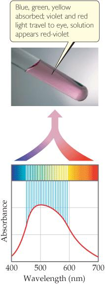
Magnetismo de los compuestos de coordinación
Muchos complejos de metales de transición son paramagnéticos, porque sus iones conservan electrones desapareados cuyo espín responde al campo magnético, y la medición del grado de paramagnetismo permite contar esos electrones desapareados por ion metálico (Brown et al. 2012, sec. 23.5). La comparación entre [CoF₆]³⁻ y [Co(CN)₆]³⁻ es reveladora: ambos contienen Co(III) con configuración 3d⁶, pero los compuestos del primero tienen cuatro electrones desapareados y los del segundo ninguno, una diferencia que ninguna teoría de enlace puede ignorar (Brown et al. 2012, sec. 23.5).
Los complejos sin electrones desapareados son diamagnéticos y no interaccionan con el campo magnético, como el ferrocianuro Fe(CN)₆⁴⁻, mientras que el ion ferroso hidratado Fe(H₂O)₆²⁺ posee un momento magnético correspondiente a cuatro espines paralelos (Pauling 1988, sec. 19–2). Pauling convirtió esta observación en un criterio estructural: el estudio de las propiedades magnéticas permite en muchos casos decidir cuáles son los orbitales de enlace que usa el átomo metálico, distinguiendo los complejos esencialmente iónicos de los covalentes (Pauling 1988, sec. 19–2).
Teoría del campo cristalino
La teoría del campo cristalino modela la unión metal-ligando como una interacción ácido-base de Lewis reforzada por fuerzas electrostáticas: el ligando, base, dona un par de electrones a un orbital vacío del ion metálico, ácido, y la atracción catión-anión o ion-dipolo estabiliza el conjunto (Brown et al. 2012, sec. 23.6). Sobre esa base electrostática, la teoría considera a los ligandos como cargas puntuales que repelen los electrones d: en un campo octaédrico, las cargas se aproximan por los ejes x, y y z, de modo que los orbitales dₓ₂₋y₂ y d_z₂ apuntan directamente a ellas y suben de energía, mientras que d_xy, d_xz y d_yz apuntan entre los ejes y quedan más bajos (Brown et al. 2012, sec. 23.6).
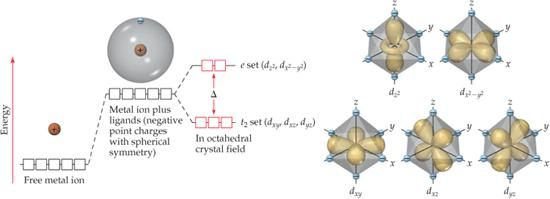
El desdoblamiento de Figura 23.9 crea el conjunto inferior de tres orbitales degenerados, llamado t₂, y el superior de dos, llamado e, separados por la energía de desdoblamiento del campo cristalino Δ, del mismo orden de magnitud que la energía de un fotón de luz visible (Brown et al. 2012, sec. 23.6). Cuando un complejo absorbe luz visible que excita un electrón de un orbital t₂ a uno e, se produce una transición d-d (Ecuación Ecuación 23.1), que es la responsable del color, como en el [Ti(H₂O)₆]³⁺, cuyo electrón único d¹ pasa del conjunto t₂ al e al absorber la luz de 495 nm (Brown et al. 2012, sec. 23.6).
\[ \Delta E = \frac{hc}{\lambda} \tag{23.1}\]
En la Ecuación Ecuación 23.1, ΔE es la energía del fotón absorbido y, en primera aproximación, el desdoblamiento del campo cristalino, h la constante de Planck, c la velocidad de la luz y λ la longitud de onda de la radiación, de modo que un Δ grande exige absorber luz corta y energética (Brown et al. 2012, secs. 6.1-6.2, 23.6).
La serie espectroquímica ordena los ligandos según su capacidad de aumentar Δ: los de campo débil del extremo izquierdo, como el I⁻, el Br⁻ y el Cl⁻, producen desdoblamientos pequeños, mientras los de campo fuerte del derecho, como el CN⁻ y el CO, los producen grandes, casi el doble entre los extremos (Brown et al. 2012, sec. 23.6).
Cuando la adición del cuarto electrón d debe decidir entre ocupar un orbital e o emparejarse en un t₂, compiten la energía de desdoblamiento Δ y la energía de apareamiento de espines, que penaliza a los dos electrones obligados a compartir orbital (Brown et al. 2012, sec. 23.6). En los complejos de campo débil como [CoF₆]³⁻, Δ es pequeño y los electrones ocupan primero los orbitales e, resultando un complejo de espín alto con cuatro electrones desapareados; en los de campo fuerte como [Co(CN)₆]³⁻, Δ supera a la energía de apareamiento y los seis electrones se emparejan en t₂, formando un complejo de espín bajo diamagnético (Brown et al. 2012, sec. 23.6).
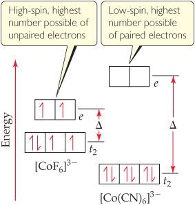
La configuración electrónica de Figura 23.10 explica la regla práctica de los electrones desapareados: los iones d¹, d² y d³ colocan sus electrones paralelos en t₂, mientras para los iones d⁴, d⁵, d⁶ y d⁷ la elección entre espín alto y bajo depende de la fuerza del campo, y para d⁸, d⁹ y d¹⁰ no hay alternativa posible (Brown et al. 2012, sec. 23.6). En los metales de los periodos quinto y sexto, cuyos orbitales d son más grandes e interaccionan más con los ligandos, el desdoblamiento es mayor y sus complejos octaédricos son siempre de espín bajo (Brown et al. 2012, sec. 23.6).
En los complejos tetraédricos, los orbitales se invierten respecto del octaedro, con el conjunto t₂ por encima del e, y el desdoblamiento es mucho menor, de modo que todos los complejos tetraédricos son de espín alto (Brown et al. 2012, sec. 23.6). Para el mismo ion y los mismos ligandos, el desdoblamiento tetraédrico alcanza solo cuatro novenos del octaédrico (Ecuación Ecuación 23.2), mientras que los complejos planos cuadrados, propios de los iones d⁸ como Pd²⁺, Pt²⁺ y Au³⁺, son casi siempre de espín bajo y diamagnéticos, con el orbital dₓ₂₋y₂ vacío (Brown et al. 2012, sec. 23.6).
\[ \Delta_{\mathrm{tet}} = \frac{4}{9}\,\Delta_{\mathrm{oct}} \tag{23.2}\]
En la Ecuación Ecuación 23.2, Δ_tet es la energía de desdoblamiento del campo cristalino tetraédrico y Δ_oct la del octaédrico con el mismo metal y los mismos ligandos, relación que surge de tener cuatro ligandos en lugar de seis y de la peor orientación de sus cargas frente a los orbitales (Brown et al. 2012, sec. 23.6). La predicción de la geometría por el magnetismo se confirma con los complejos de Ni(II), un ion d⁸: el [NiCl₄]²⁻, paramagnético con dos electrones desapareados, es tetraédrico y de espín alto, mientras el [Ni(CN)₄]²⁻, diamagnético, es plano cuadrado y de espín bajo (Brown et al. 2012, sec. 23.6; Pauling 1988, sec. 19–2).
Transferencia de carga y límites de la teoría
No todo color de los metales de transición nace de una transición d-d, como demuestra el permanganato MnO₄⁻, un complejo de manganeso(VII) con configuración d⁰ en la que no hay electrones d que excitar (Brown et al. 2012, sec. 23.6). La absorción intensa del permanganato se debe a una transición de transferencia de carga del ligando al metal, en la que un electrón de un par no enlazante de un oxígeno se excita hacia un orbital d vacío del manganeso, y algo análogo ocurre en el cromato CrO₄²⁻, también d⁰ (Brown et al. 2012, sec. 23.6).
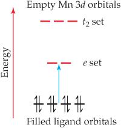
El contraste de Figura 23.11 delimita el rango de validez del campo cristalino: al basarse en interacciones electrostáticas, esencialmente enlaces iónicos, no captura el carácter covalente que evidencian muchas líneas de investigación, y la teoría de orbitales moleculares ofrece una descripción más completa, aunque su aplicación a los compuestos de coordinación rebase el alcance de este libro (Brown et al. 2012, sec. 23.6).
Pauling, en cambio, describió los complejos como enlaces covalentes formados por orbitales híbridos, distintos para cada geometría: d²sp³ en el octaedro, sp³ en el tetraedro y dsp² en el plano cuadrado, y consideró el momento magnético la prueba experimental de cuáles orbitales intervienen en el enlace (Pauling 1988, sec. 19–2).
Ambas posturas conviven porque responden a preguntas distintas: el modelo electrostático predice color y magnetismo a partir de Δ, y el de orbitales explica por qué ligandos como el cianuro y el monóxido de carbono forman enlaces dobles que reparten la carga según el principio de electroneutralidad, impidiendo que el metal acumule la gran carga negativa formal que sugeriría una lectura ingenua de la fórmula (Pauling 1988, secs. 19-2, 19-10).
Aplicaciones de los complejos en la disolución, el análisis y la industria
La formación de complejos disuelve precipitados poco solubles al reducir la concentración del ion libre por debajo de su producto de solubilidad, como ocurre cuando el exceso de amoníaco disuelve el precipitado azul de hidróxido de cobre convirtiéndolo en el ion azul profundo Cu(NH₃)₄²⁺ (Pauling 1988, sec. 19–3). Estos complejos amínicos son tan estables que el amoníaco disuelve también el cloruro de plata como Ag(NH₃)₂⁺ y desplaza el equilibrio del níquel a través de toda la sucesión Ni(H₂O)₆²⁺, Ni(NH₃)(H₂O)₅²⁺, Ni(NH₃)₂(H₂O)₄²⁺, Ni(NH₃)₃(H₂O)₃²⁺, Ni(NH₃)₄(H₂O)₂²⁺, Ni(NH₃)₅(H₂O)²⁺ y Ni(NH₃)₆²⁺, que se forman uno a uno al aumentar la concentración de amoníaco y cambian el color de la disolución del verde al azul-violeta (Pauling 1988, sec. 19–3).
La solubilización por complejación sostiene el análisis químico y la industria: el ion tiosulfato Ag(S₂O₃)₂³⁻ disuelve los haluros de plata no revelados de la emulsión fotográfica, los cianuros complejos permiten el electroplateado de oro, plata, zinc y cadmio con depósitos finos y uniformes, y el tetracloroaurato AuCl₄⁻ explica que el agua regia disuelva el oro, que no es significativamente soluble en ninguno de sus ácidos por separado (Pauling 1988, secs. 19-4, 19-5). Los agentes quelantes polidentados, llamados agentes secuestrantes, convierten en complejos inocuos los iones metálicos que interfieren en el teñido y en la fabricación de jabones y detergentes, y el EDTA valora la dureza del agua en el laboratorio (Pauling 1988, sec. 19–9; Brown et al. 2012, sec. 23.3).
La constante de formación cuantifica la estabilidad del complejo como constante de equilibrio de su formación a partir de los componentes, con valores mayores para los quelatos que para los monodentados análogos, y el efecto quelato tiene su origen en la entropía: cada ligando polidentado libera más moléculas de disolvente que el monodentado equivalente, aumentando el desorden del sistema (Brown et al. 2012, sec. 23.3; Pauling 1988, sec. 19–8).
Por eso la constante de formación del [Zn(tren)]²⁺, con su agente tetradentado, supera en más de cuatrocientas mil veces la del [Zn(NH₃)₄]²⁺, y el complejo de hierro con el cianuro soporta la acción de los ácidos fuertes mientras el ion ferroso solo se conserva en otros entornos (Pauling 1988, secs. 19-4, 19-9).
Ejemplo resuelto: el magnetismo del hierro(II) como ventana al enlace
Consideremos dos compuestos de hierro(II), que contiene seis electrones en la subcapa 3d por fuera del caparazón del argón: el cloruro ferroso hidratado y el ferrocianuro de potasio (Pauling 1988, sec. 19–2). La primera parte del problema pide explicar por qué uno es paramagnético y el otro diamagnético a partir de la teoría del campo cristalino; la segunda, por qué el cianuro forma este complejo mientras el agua no; y la tercera, qué predicción diferente hace el modelo de orbitales híbridos de Pauling (Pauling 1988, sec. 19–2; Brown et al. 2012, sec. 23.6).
El ion [Fe(H₂O)₆]²⁺ posee un momento magnético correspondiente a cuatro espines no apareados en orientación paralela, el máximo que admite la regla de Hund para el ion aislado (Pauling 1988, sec. 19–2). En el lenguaje del campo cristalino, el agua es un ligando de campo débil y su desdoblamiento Δ es pequeño (Brown et al. 2012, sec. 23.6).
Con un Δ pequeño, los seis electrones d del hierro(II) ocupan los orbitales con el máximo número de espines paralelos, cuatro desapareados y un par, de modo que el complejo resulta de espín alto y paramagnético (Brown et al. 2012, sec. 23.6). En el ferrocianuro, el cianuro es un ligando de campo fuerte, Δ es grande, y los seis electrones se emparejan en el conjunto t₂, produciendo un complejo de espín bajo sin electrones desapareados y, por tanto, diamagnético (Brown et al. 2012, sec. 23.6; Pauling 1988, sec. 19–2).
La segunda parte del problema apela a la estructura electrónica: el cianuro es especialmente eficaz porque forma dobles enlaces con el metal, de modo que la estructura de resonancia del ferrocianuro reparte la carga y deja sobre el hierro una carga formal mínima, compatible con el principio de electroneutralidad, mientras el agua solo ofrece enlaces sencillos iónicos (Pauling 1988, sec. 19–10).
La tercera parte enfrenta los modelos: Pauling interpreta la misma evidencia magnética como la diferencia entre complejos iónicos, que usan únicamente los orbitales 4s y 4p, y complejos covalentes que emplean los orbitales híbridos d²sp³ del octaedro, y concluye que el ferrocianuro es covalente y el ferroso acuoso esencialmente iónico (Pauling 1988, sec. 19–2).
Ambas descripciones coinciden en el diamagnetismo del ferrocianuro y en el paramagnetismo del acuoso, y difieren solo en la causa última, electrostática en un caso y covalente en el otro, un contraste que las teorías más avanzadas de orbitales moleculares reconcilian reconociendo ambos caracteres (Brown et al. 2012, sec. 23.6; Pauling 1988, sec. 19–2).
Preguntas y ejercicios
Esta sección reúne problemas inspirados en la tipología de Brown et al. (2012) (capítulo 23), de Pauling (1988) (capítulos 17 y 19) y de Brock (2015) (capítulo 1), reformulados en enunciados propios y con contextos distintos de los originales, de modo que la resolución exija comprensión y no memoria. Cada pregunta admite una respuesta razonada que se desarrolla en el solucionario final del capítulo, al que puede acudirse después del intento propio.
Nombre los compuestos [Cr(H₂O)₄Cl₂]Cl y K₄[Ni(CN)₄] siguiendo las reglas de la nomenclatura de coordinación, y justifique cada paso con el estado de oxidación del metal, el nombre y el orden de los ligandos y el sufijo del anión cuando el complejo sea negativo (Brown et al. 2012, sec. 23.4).
Escriba la fórmula del ion diaminodiaquadiciano-hierro(III) y explícela en sus partes: los números de cada ligando, el estado de oxidación del metal y la carga total del ion, indicando qué nombres reciben el agua, el amoníaco y el monóxido de carbono cuando actúan como ligandos (Brown et al. 2012, sec. 23.4).
El ion nitrito puede coordinar al cobalto por el nitrógeno o por un oxígeno; explique qué tipo de isomería produce esta dualidad, qué nombres reciben las dos formas y por qué difieren en color, y diga si el amoníaco puede presentar el mismo comportamiento (Brown et al. 2012, sec. 23.4).
Explique por qué el cisplatino [Pt(NH₃)₂Cl₂] trata ciertos tipos de cáncer mientras su isómero trans resulta ineficaz: describa la interacción de cada isómero con los dos nitrógenos de una hebra de ADN, la geometría que ambos comparten y la clase de estereoisomería a la que pertenece la pareja (Brown et al. 2012, sec. 23.4).
Razone si el ion [Co(en)₃]³⁺ presenta isómeros ópticos y distíngalos de los geométricos: recuerde el significado de quiral, enantiómero y mezcla racémica, dibuje las dos imágenes especulares no superponibles y explique qué ocurre al hacer pasar luz polarizada por la disolución de cada enantiómero (Brown et al. 2012, sec. 23.4).
Ordene según su capacidad de aumentar el desdoblamiento los complejos [Ti(H₂O)₆]³⁺, [Ti(en)₃]³⁺ y [TiCl₆]³⁻, prediga cuál absorbe la luz de longitud de onda más corta y justifique la respuesta con la serie espectroquímica y la relación entre Δ y la energía del fotón (Brown et al. 2012, sec. 23.6).
Prediga el número de electrones desapareados en los complejos de espín alto y de espín bajo del ion Fe³⁺ con número de coordinación seis, indique qué ligando, el fluoruro o el cianuro, produce cada caso y relacione el resultado con las propiedades magnéticas observadas (Brown et al. 2012, sec. 23.6).
El ion [NiCl₄]²⁻ es paramagnético y el [Ni(CN)₄]²⁻ diamagnético; determine la configuración electrónica del Ni(II), asigne a cada complejo su geometría entre tetraédrica y plana cuadrada según la información magnética y explique la elección con los diagramas de desdoblamiento de ambas geometrías (Brown et al. 2012, sec. 23.6).
Explique por qué el exceso de amoníaco disuelve el precipitado de hidróxido de cobre(II) mientras el hidróxido de sodio no lo hace, describa la especie azul profundo que se forma y razone el efecto de añadir cloruro de amonio a la disolución resultante (Pauling 1988, secs. 19-3, 19-8).
Justifique con las estructuras electrónicas de los metales la afirmación de que el bloque d supera al bloque s en versatilidad química: mencione los múltiples estados de oxidación de hierro, manganeso y vanadio, la utilidad del oro solo en complejos covalentes como AuCl₄⁻ y el papel del níquel en el refinado del metal (Pauling 1988, secs. 19-5, 20-1, 20-6, 21-1, 22-3, 22-7).
Solucionario
En la primera pregunta, el [Cr(H₂O)₄Cl₂]Cl es el cloruro de tetraacuadiclorocromo(III): cuatro aguas se nombran tetraaqua, dos cloruros dichloro, el estado de oxidación del cromo se deduce como +3 al compensar las cargas negativas, y el cloruro exterior se nombra al final; el K₄[Ni(CN)₄] es el tetracianoniquelato(0) de potasio, porque los cuatro cianuros suman −4, el catión potasio aporta +4 y el níquel queda en estado 0, con el metal como niquelato al ser anión y el sufijo -ato del complejo negativo (Brown et al. 2012, sec. 23.4).
En la segunda pregunta, el ion diaminodiaquadiciano-hierro(III) se escribe [Fe(CN)₂(NH₃)₂(H₂O)₂]⁺, con dos cianuros, dos aminas y dos aguas alrededor del hierro(III) que suma las cargas para dar la carga total +1 (Brown et al. 2012, sec. 23.4). El agua se nombra aqua y el amoníaco ammine, con terminación especial compartida por el carbonilo CO, mientras los ligandos aniónicos terminan en o, como el ciano, y en la fórmula el metal se escribe primero aunque en el nombre los ligandos anteceden al metal (Brown et al. 2012, sec. 23.4).
La doble posibilidad de coordinación del nitrito produce isomería de enlace: la forma nitro, unida por el nitrógeno, es amarilla, y la nitrito, unida por un oxígeno y escrita ONO⁻, es roja, siendo el tiocianato, que puede donar por N o por S, otro ejemplo del mismo fenómeno (Brown et al. 2012, sec. 23.4). El amoníaco no presenta isomería de enlace, pues solo tiene un átomo donador, el nitrógeno, y el dato de los colores distintos demuestra que los isómeros estructurales difieren en propiedades y no solo en el dibujo (Brown et al. 2012, sec. 23.4).
El cisplatino, isómero cis del [Pt(NH₃)₂Cl₂], tiene los cloruros adyacentes y al perderlos forma un quelato con dos nitrógenos del ADN, en tanto el isómero trans tiene los cloruros enfrentados y, demasiado separados para alcanzar ambos nitrógenos, no puede formar el quelato y carece de efecto terapéutico (Brown et al. 2012, sec. 23.4). La pareja es un ejemplo de isomería geométrica, la forma de estereoisomería en que los mismos enlaces se disponen de maneras espaciales distintas (Brown et al. 2012, sec. 23.4).
El [Co(en)₃]³⁺ tiene isómeros ópticos, porque el ion es quiral y sus dos imágenes especulares no superponibles, los enantiómeros, rotan el plano de la luz polarizada en sentidos contrarios, uno dextrorrotatorio y otro levorrotatorio, mientras que una mezcla racémica, con cantidades iguales de ambos, no rota la luz porque los efectos se anulan (Brown et al. 2012, sec. 23.4). En el [Co(en)₂Cl₂]⁺, el isómero trans es superponible a su imagen y no tiene isómeros ópticos, mientras el cis sí los presenta (Brown et al. 2012, sec. 23.4).
De los tres complejos del Ti(III), todos iones d¹, la etilendiamina es el ligando más alto de la serie espectroquímica y produce el mayor desdoblamiento, seguida del agua y del cloruro, de modo que [Ti(en)₃]³⁺ absorbe la luz de longitud de onda más corta, porque un Δ grande exige un fotón energético según la Ecuación Ecuación 23.1. La serie ordena por tanto las capacidades de aumentar Δ, y la longitud de onda absorbida es inversamente proporcional a ese desdoblamiento (Brown et al. 2012, sec. 23.6).
El ion Fe³⁺ es un ion d⁵: en el complejo de espín alto, de campo débil como el fluoruro, los cinco electrones quedan desapareados con tres en t₂ y dos en e, mientras en el de espín bajo, de campo fuerte como el cianuro, los cinco se concentran en t₂ con un solo desapareado (Brown et al. 2012, sec. 23.6). La medición del paramagnetismo distingue con claridad ambas situaciones, y por eso el estudio magnético es una herramienta experimental de primera línea para decidir la configuración real (Brown et al. 2012, sec. 23.5).
El Ni(II) es un ion d⁸: en geometría tetraédrica, siempre de espín alto, quedan dos electrones desapareados y el complejo es paramagnético, mientras en la plana cuadrada, casi siempre de espín bajo, los ocho electrones se emparejan y la especie es diamagnética (Brown et al. 2012, sec. 23.6). Por tanto el [NiCl₄]²⁻, paramagnético, es tetraédrico, y el [Ni(CN)₄]²⁻, diamagnético, es plano cuadrado, en concordancia con la estructura cuadrada establecida por rayos X para niquel, paladio y platino (Pauling 1988, sec. 19–2).
El exceso de amoníaco disuelve el hidróxido de cobre porque forma el complejo Cu(NH₃)₄²⁺, mucho más estable que el ion hidratado, reduciendo la concentración de ion cúprico libre por debajo del producto de solubilidad del hidróxido, mientras el hidróxido de sodio no ofrece ningún ligando capaz de esa captura (Pauling 1988, sec. 19–3). Añadir cloruro de amonio a la disolución reprime la ionización del hidróxido de amonio, desplazando el equilibrio hacia el amoníaco molecular y disminuyendo la concentración de hidróxido, y ambos efectos empujan el equilibrio de precipitación hacia la derecha y disuelven más precipitado (Pauling 1988, sec. 19–8).
Los metales de transición aprovechan los orbitales d para compartir electrones en estados de oxidación múltiples: el hierro alcanza +2, +3 y raramente +6, el manganeso desde +2 hasta +7 y el vanadio desde +2 hasta +5, mientras el oro solo se estabiliza en disolución dentro de complejos covalentes como AuCl₄⁻ o AuCl₂⁻ y el níquel refina su metal formando el carbonilo volátil Ni(CO)₄ (Pauling 1988, cap. 17, secs. 19-5, 19-10, 20-1, 20-6, 21-1, 22-3, 22-7). Esta versatilidad, ausente en los metales del bloque s que se limitan a una valencia casi única, es la que convierte al bloque d en el escenario de la catálisis industrial y de la química de la vida (Brown et al. 2012, sec. 23.3).
Resumen
Los metales de transición, cuarenta elementos del bloque d con la subcapa d incompleta, combinan estados de oxidación múltiples, alta densidad, puntos de fusión elevados y la capacidad de formar compuestos de coordinación con ligandos monodentados, bidentados y polidentados, cuyo enlace es una reacción ácido-base de Lewis entre el metal ácido y el ligando base (Brown et al. 2012, secs. 23.1-23.2). Werner fundó la disciplina distinguiendo la valencia primaria del número de coordinación, y la nomenclatura moderna traduce sin ambigüedad nombre, fórmula y arreglo espacial (Brown et al. 2012, secs. 23.2, 23.4).
La isomería estructural de enlace y de esfera de coordinación, junto con la estereoisomería geométrica cis-trans y la óptica de los enantiómeros, explica que fórmulas idénticas correspondan a sustancias de propiedades a veces opuestas, como el cisplatino eficaz y el trans ineficaz (Brown et al. 2012, sec. 23.4). El color nace de las transiciones d-d cuando la energía del fotón visible coincide con el desdoblamiento del campo cristalino, y la serie espectroquímica ordena a los ligandos por su capacidad de abrir esa brecha Δ (Brown et al. 2012, secs. 23.5-23.6).
El balance entre Δ y la energía de apareamiento decide si el complejo es de espín alto o bajo, con consecuencias magnéticas medibles que distinguen también las geometrías tetraédrica, siempre de espín alto, y plana cuadrada, casi siempre de espín bajo (Brown et al. 2012, sec. 23.6). El campo cristalino, modelo electrostático, y el enlace de valencia de Pauling, con orbitales híbridos y enlaces dobles del cianuro, constituyen dos posturas complementarias que la teoría de orbitales moleculares reconcilia, y sus aplicaciones, desde la disolución de precipitados hasta el refinado del níquel y la bioquímica de las porfirinas, hacen del bloque d el grupo más versátil de la tabla (Brown et al. 2012, sec. 23.6; Pauling 1988, sec. 19–10).